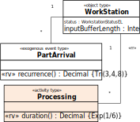
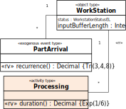

1.6. Discrete Event Processes, Business Processes and Processing Processes
A discrete event process consists of a partially ordered set of events that cause a corresponding sequence of discrete state changes of affected objects. When two or more events within such a process have the same order rank, this means that they occur simultaneously. A discrete event process, also known more simply as a discrete process, may be an instance of a discrete process type defined by a discrete process model.
A business process is a discrete process that serves certain business purposes of an organization and involves events and activities performed by actors of the organization. Typically, a business process is an instance of a business process type defined by an organization (or organizational unit), which is the owner of the business process type, in the form of a business process model.
A business process model defines an Activity Network (AN) consisting of event and activity nodes connected by means of event flow arrows and resource-dependent activity scheduling (RDAS) arrows, such that event and activity nodes may be associated with objects representing their participants. In the case of an activity node, these participating objects include the resource objects required for performing an activity. Typically, an activity node is associated with a particular resource object representing the activity performer.
An RDAS arrow from an activity node (or an event) to a successor activity node expresses the fact that a corresponding activity end event (or plain event) triggers the conditional scheduling of a successor activity start event, corresponding to the creation of a new task in the task queue of (the performer of) the successor activity.
An activity node of an AN typically has a queue of tasks (or planned activities) waiting for the availability of the required resources.
A processing process is a business process involving arrival events, processing activities and departure events. An arrival event for one or more processing objects happens at an entry station, from where they are routed to a processing station where processing activities are performed on them, before they are routed to another processing station or to an exit station where they leave the system via a departure event.
A processing process model defines a Processing Network (PN) consisting of entry nodes, processing nodes and exit nodes where each node represents a combination of a spatial object and an event type:
- Defining an entry node means defining both an entry station object (e.g., a reception area or a factory entrance) and an arrival event type for arriving processing objects (such as people or manufacturing parts).
- Defining a processing node means defining both a processing station object (often used as a resource object, such as a workstation or a room) and a processing activity type.
- Defining an exit node means defining both an exit station object and a departure event type.
In a PN, all processing nodes have an input buffer (or queue) filled with processing objects that wait to be processed. A PN where all processing activities have exactly one abstract resource (a "server") is also known as a Queuing Network in Operations Research (where processing nodes are called "servers" and processing objects are called "entities" or "jobs").
For accommodating resource-constrained activities and Processing Networks, basic OEM and DPMN are extended in two steps. The first extension, OEM/DPMN-A, comprises four new information modeling categories (activity types, resource roles, resource pools, and parallel participation) and one new process modeling element (RDAS arrows), while the second extension, OEM/DPMN-PN, comprises a set of four pre-defined object type categories (processing objects, entry stations, processing stations, exit stations), two pre-defined event type categories (arrival events, departure events), one activity type category (processing activities), three node type categories (entry nodes, processing nodes, exit nodes) and one new process modeling element (object flow arrows).
A. Discrete Event Processes and Event Graphs
A discrete event process consists of a partially ordered set of events that cause a corresponding sequence of discrete state changes of affected objects. When two or more events within such a process have the same order rank, this means that they occur simultaneously.
As an example of a discrete event process we consider a manufacturing process with a workstation and three types of events: PartArrival events, ProcessingStart events and ProcessingEnd events.
The example process is described by the following list of event expressions: PartArrival@1, ProcessingStart@1.01, PartArrival@5.4, PartArrival@6.5, ProcessingEnd@8.47, ProcessingStart@8.48, ProcessingEnd@11.95, ProcessingStart@11.96, ProcessingEnd@17.48, where an expression E@t represents an event of type E occurring at time t.
How this process unfolds in time is illustrated by the following process log:
| Step | Time | System State | Future Events |
|---|---|---|---|
| 0 | 0 | WorkStation-1{ bufLen: 0, status: "AVAILABLE"} | PartArrival@1 |
| 1 | 1 | WorkStation-1{ bufLen: 1, status: "AVAILABLE"} | ProcessingStart@1.01, PartArrival@5.4 |
| 2 | 1.01 | WorkStation-1{ bufLen: 1, status: "BUSY"} | PartArrival@5.4, ProcessingEnd@8.47 |
| 3 | 5.4 | WorkStation-1{ bufLen: 2, status: "BUSY"} | PartArrival@6.5, ProcessingEnd@8.47 |
| 4 | 6.5 | WorkStation-1{ bufLen: 3, status: "BUSY"} | ProcessingEnd@8.47 |
| 5 | 8.47 | WorkStation-1{ bufLen: 2, status: "BUSY"} | ProcessingStart@8.48 |
| 6 | 8.48 | WorkStation-1{ bufLen: 2, status: "BUSY"} | ProcessingEnd@11.95 |
| 7 | 11.95 | WorkStation-1{ bufLen: 1, status: "BUSY"} | ProcessingStart@11.96 |
| 8 | 11.96 | WorkStation-1{ bufLen: 1, status: "BUSY"} | ProcessingEnd@17.48 |
| 9 | 17.48 | WorkStation-1{ bufLen: 0, status: "AVAILABLE"} |
The events of a real-world discrete event process happen in a coherent spatio-temporal region determined by the locations of the events' participants. In a simulation model, one may abstract away from the aspect of space and model objects without locations, implying that events and processes happen in time, but not in space.
A discrete event process, also known more simply as a discrete process, may be an instance of a discrete process type defined by a discrete process model. A discrete event process pattern can be modeled in the form of a basic DPMN process diagram, which is an extended Event Graph.
The Event Graph modeling language proposed by Schruben (1983) defines directed graphs where the nodes are Event circles (representing typed event variables) annotated with state change statements in the form of state variable assignments, and the edges are arrows representing event flows. In the case of a conceptual process model, event flow arrows express the causation of follow-up events. In the case of a process simulation design model, event flow arrows express the scheduling of follow-up events according to the event scheduling paradigm of Discrete Event Simulation.
Basic DPMN extends the Event Graph diagram language by adding object rectangles containing declarations of typed object variables and state change statements, as well as gateway diamonds for expressing conditional and parallel branching.
The following basic DPMN diagram is an extended Event Graph defining a process pattern that is instantiated by the above discrete event process example.

This process model is based on the following Object Event (OE) class model:
A DPMN process design model specifies a set of chained event rules, one rule for each Event circle of the model. The above model specifies the following three event rules:
- On each PartArrival event, the inputBufferLength attribute of the associated WorkStation object is incremented and if the workstation's status attribute has the value AVAILABLE, then a new ProcessingStart event is scheduled to occur immediately.
- When a ProcessingStart event occurs, the associated WorkStation object's status attribute is changed to BUSY and a ProcessingEnd event is scheduled with a delay provided by invoking the processingTime function defined in the ProcessingStart event class.
- When a ProcessingEnd event occurs, the inputBufferLength attribute of the associated WorkStation object is decremented and if the inputBufferLength attribute has the value 0, the associated WorkStation object's status attribute is changed to AVAILABLE. If the inputBufferLength attribute has a value greater than 0, a new ProcessingStart event is scheduled to occur immediately.
The formal (transition system) semantics of basic DPMN diagrams, based on the semantics of event rules as transition functions, has been presented in (Wagner 2017a). It can be shown that the basic DPMN diagram language is a conservative extension of the Event Graph diagram language by means of a homomorphic embedding of Event Graphs in DPMN diagrams.
B. Business Processes and Activity Networks
An activity is a composite event that is composed of, and temporally framed by, a pair of start and end events.
A business process of an organization is a discrete event process that includes activities performed by actors of the organization for serving certain business purposes of the organization. In addition to its performer, an activity may involve further resources, and allocating the required resources from resource pools during the course of a business process is essential for keeping it going.
As an example of a business process we consider a manufacturing process with a workstation and three types of events: PartArrival events, Processing-Activity-Start events and Processing-Activity-End events.
The example business process is described by the following list of event expressions: PartArrival@1, Processing-Activity-Start@1.01, PartArrival@5.4, PartArrival@6.5, Processing-Activity-End@8.47, Processing-Activity-Start@8.48, Processing-Activity-End@11.95, Processing-Activity-Start@11.96, Processing-Activity-End@17.48, where an expression E@t represents an event of type E occurring at time t.
How this process unfolds in time is illustrated by the following process log:
| Step | Time | System State | Future Events |
|---|---|---|---|
| 0 | 0 | WorkStation-1{ status: 1} | av. workStations: ws1 | PartArrival@1 |
| 1 | 1 | WorkStation-1{ status: 2} | av. workStations: | Processing-Activity-Start{ ws1 }@1.01, PartArrival@18.83 |
| 2 | 1.01 | WorkStation-1{ status: 2} | av. workStations: | Processing-Activity-End{ ws1 }@8.08, PartArrival@18.83 |
| 3 | 8.08 | WorkStation-1{ status: 1} | av. workStations: ws1 | PartArrival@18.83 |
| 4 | 18.83 | WorkStation-1{ status: 2} | av. workStations: | Processing-Activity-Start{ ws1 }@18.84, PartArrival@25.61 |
| 5 | 18.84 | WorkStation-1{ status: 2} | av. workStations: | Processing-Activity-End{ ws1 }@23.9, PartArrival@25.61 |
| 6 | 23.9 | WorkStation-1{ status: 1} | av. workStations: ws1 | PartArrival@25.61 |
| 7 | 25.61 | WorkStation-1{ status: 2} | av. workStations: | Processing-Activity-Start{ ws1 }@25.62 |
| 8 | 25.62 | WorkStation-1{ status: 2} | av. workStations: | Processing-Activity-End{ ws1 }@32.03 |
| 9 | 32.03 | WorkStation-1{ status: 1} | av. workStations: ws1 |
Notice that, as opposed to the process log shown in Table 1-1,
- the workstation with ID 1 is a (performer) resource for Processing activities having either the status 1 (being available) or 2 (being busy), and
- there is a pool of available resources ("av. workStations").
Typically, a business process is an instance of a business process type defined by an organization (or organizational unit), which is the owner of the business process type, in the form of a business process model. The above example business process is an instance of the following model:
A business process model defines an Activity Network (AN), which provides a pattern for business processes. An AN specifies a set of chained event rules with typed object, event and activity variables, based on an OE class model defining object, event and activity types. By convention, activity classes have a duration function that is invoked for getting the duration of newly created instances of the activity class. In a simulation design model, these functions typically define random variate sampling functions (like the service time concept in queuing theory).
Event circles and Activity rectangles may be connected via event flow arrows, as shown above in Figure 1-10, or via resource-dependent activity scheduling arrows, as shown below in Figure 1-11.
The AN shown in Figure 1-10 defines the following event rules:
- On each PartArrival event, if the associated WorkStation object's status attribute has the value AVAILABLE, then it is set to BUSY and the rule variable wsAllocated is set to true; otherwise the inputBufferLength attribute of the associated WorkStation object is incremented. If wsAllocated holds, then a new Processing activity is scheduled to start immediately with a duration provided by invoking the duration function defined in the Processing activity class.
- When a Processing activity ends, if the inputBufferLength attribute of the associated WorkStation object has the value 0, then the WorkStation object's status attribute is set to AVAILABLE; otherwise the rule variable wsAllocated is set to true and the WorkStation object's inputBufferLength attribute is decremented. If wsAllocated holds, then a new Processing activity is scheduled to start immediately with a duration provided by invoking the duration function defined in the Processing activity class.
Since the resource management logic concerning the workstation as a resource for Processing activities follows a general pattern, a new modeling language element can be introduced for capturing this pattern. Using resource-dependent activity start arrows, we can express the process model of Figure 1-10 more simply as in the following diagram:
 
Notice that in this model, we have expressed that we no longer have to take care of setting the status of the workstation as a resource, nor do we have to update the queue/buffer length. This is now expressed implicitly by the semantics of the resource-dependent activity scheduling (RDAS) arrow and has to be handled in a generic way by a simulator supporting DPMN-A models.
The following diagram shows a model containing both event scheduling arrows and RDAS arrows:

In this model, activities are initiated (1) by an RDAS arrow when they may have to wait for the availability of required resources, or (2) by an event scheduling arrow when no other resources are required. For instance, a new Load activity can only be started, when a wheel loader (as a performer) is available, while a Haul activity can be started immediately after the completion of a Load activity because it's performed by the loaded truck, and no other resources are required.
The most widely used language for defining ANs is the Business Process Modeling Notation (BPMN). However, in BPMN there is only one type of arrow, called "Sequence Flow", which is semantically overloaded with both meanings: it can represent an event flow arrow or a resource-dependent activity start arrow.
The concept of ANs includes business system processes, where many business actors perform activities for handling many business cases in parallel. Consequently, it is more general than the common concept of a business process as a case-handling process.
Normally all activity nodes of an AN have a queue of planned activities ("tasks") waiting for the availability of required resources (in particular, their performer). Only if a successor activity node does not require additional or different resources, it does not have a (resource allocation) queue and can be started right away whenever a predecessor activity has completed, as indicated by an event flow arrow.
When all activity nodes of an AN only have a single resource (the performer of the activity), and each of them has a different performer, then the AN corresponds to a Queuing Network in the sense of Operations Research.
A DPMN process design model (like the one shown in Figure 1-13) essentially defines the admissible sequences of events and activities together with their dependencies and effects on objects, while its underlying OE class design model (like the one shown in Figure 1-15 below) defines the types of objects, events and activities, together with the participation of objects in events and activities, including the resource roles of activities, as well as resource cardinality constraints, parallel participation constraints, alternative resources, and task priorities.

It is an option, though, to enrich a DPMN process design model by displaying more computational details, especially the recurrence of exogenous events, the duration of activities and the most important resource management features defined in the underlying OE class design model, such as resource roles (in particular, performer roles can be displayed in the form of Lanes), resource cardinality constraints, alternative resources, and task priorities. The following model shows an enriched version of Figure 1-13:

Such an enriched DPMN process design model includes all computational details needed for an implementation without a separate explicit OE class design model. In fact, such a process model implicitly defines a corresponding class model. For instance, the enriched DPMN model of Figure 1-14 above implicitly defines the following OE class model:

C. Processing Processes and Processing Networks
T.B.D.